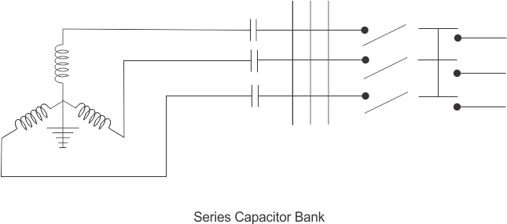
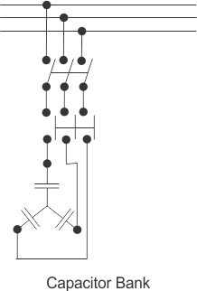
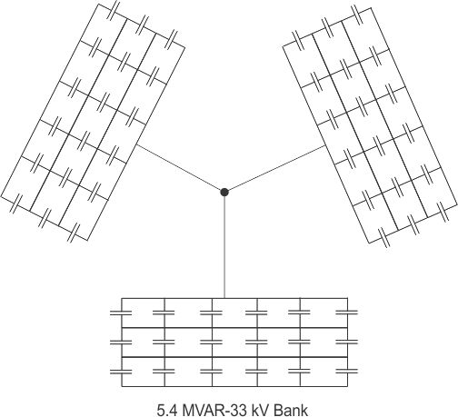

Let's explain in details,
we know that active power is expressed =vIcosθ
where,cosθ is the power factor of the system. Hence, if this power factor has got less valve, the corresponding current (I) increases for same active power P.
As the current of the system increases, the ohmic loss of the system increases. Ohmic loss means, generated electrical power is lost as unwanted heat originated in the system. The cross-section of the conducting parts of the system may also have to be increased for carrying extra ampere burden, which is also not economical in the commercial point of view. Another major disadvantage, is poor voltage regulation of the system, which mainly caused due to poor power factor.
The equipments used to compensate reactive power.
There are mainly two equipments used for this purpose.
(1) synchronous condensers
(2) Static capacitors or Capacitor Bank
synchronous condensers, can produce reactive power and the production of reactive power can be regulated. Due to this regulating advantage, the synchronous condensers are very suitable for correcting power factor of the system, but this equipment is quite expensive compared to static capacitors. That is why synchronous condensers, are justified to use only for voltage regulation of very high voltage transmission system. The regulation in static capacitors can also be achieved to some extend by split the total capacitor bank in 3 sectors of ratio 1: 2:2. This division enables the capacitor to run in 1, 2, 1+2=3,2+2=4, 1+2+2=5 steps. If still further steps are required, the division may be made in the ratio 1:2:3 or 1:2:4. These divisions make the static capacitor bank more expensive but still the cost is much lower them synchronous condensers.
It is found that maximum benefit from compensating equipments can be achieved when they are connected to the individual load side. This is practically and economically possible only by using small rated capacitors with individual load not by using synchronous condensers.
Static capacitor Bank
Static capacitor can further be subdivided in to two categories,
(a) Shunt capacitors
(b) Series capacitor


These categories are mainly based on the methods of connecting capacitor bank with the system. Among these two categories, shunt capacitors are more commonly used in the power system of all voltage levels. There are some specific advantages of using shunt capacitors such as,
a) It reduces line current of the system.
b) It improves voltage level of the load.
c) It also reduces system Losses.
d) It improves power factor of the source current.
e) It reduces load of the alternator.
f) It reduces capital investment per mega watt of the Load.
All the above mentioned benefits come from the fact, that the effect of capacitor reduces reactive current flowing through the whole system.
Shunt capacitor draws almost fixed amount of leading current which is superimposed on the load current and consequently reduces reactive components of the load and hence improves the power factor of the system.
series capacitor on the other hand has no control over flow of current. As these are connected in series with load , the load current always passes through the series capacitor bank. Actually, the capacitive reactance of series capacitor neutralizes the inductive reactance of the line hence, reduces, effective reactance of the line. Thereby, voltage regulation of the system is improved. But series capacitor bank has a major disadvantage. During faulty condition, the voltage across the capacitor maybe raised up to 15 times more than its rated value. Thus series capacitor must have sophisticated and elaborate protective equipments. Because of this, use of-series capacitor is confined in the extra high voltage system only.
Shunt Capacitor
Construction of Shunt Capacitor
The active parts of capacitor unit are composed by two aluminum foils separated by impregnated papers. The thickness of the papers may vary from 8 microns to 24 microns depending upon the voltage level of the system. The thickness of the aluminum foil is in the order of 7 microns. For low voltage applications, there may be one layer of impregnated paper of suitable thickness between the foils but for higher voltage applications more than one layer of impregnated papers are placed between the aluminum foil to avoid unwanted circulation of short circuit current between the foil due to presence of conducting matters in the papers.
The capacitor sections are wound into rolls thereafter they are flattened out, compressed into packs, enclosed in multiple layers of heavy paper insulations and inserted into the containers. When the lid had been welded to the container, the capacitor unit is dried and integrated in large autoclaves by a combination of heat and vacuum. After the paper is completely dried and all gases removed from the insulation the capacitor tank is filled with impregnant degassed at the same vacuum.
In the early stages of development, it was generally mineral insulating oil which was used as impregnant. This has now been replaced by most of the manufacturers with synthetic liquids of chlorinated diphenyl group bearing different trade names. Mineral insulating oil has very low electric conductivity and very high dielectric strength. But it has however some drawbacks such as,
a) It has low dielectric constant.
b) The voltage distribution in the mineral oil is not uniform.
c) It is very inflammable.
d) It is subjected to oxidation.
With the synthetic impregnant it is quite possible to manufacture smaller capacitor unit with higher voltage rating. The voltage rating of the capacitor unit is restricted within certain limits because on low voltage the cost per kilo VAR goes high. For high voltage applications, numbers of capacitor units are connected in series and parallel combination to form a capacitor bank for required voltage and Kilo VAR ratings. For example when 5.1 Mega VAR capacitor bank is to be commissioned in an 11 KV system, each unit of the bank is made of 11 KV rated. In this installation, per phase requirement of Mega VAR is 5.1/3=1.7. In this installation, there should be only one capacitor unit connected in series and 17 of such units are connected in parallel to meet up the mega VAR requirement of one phase. For three phase system three such groups of capacitor unit are connected together in star or delta form. Let’s show another example for better understanding. When a bank of 5.4 Mega VAR is to be installed at 33 KV 3 phase system. There shall be three capacitor units connected in series and six of such series combinations are connected in parallel to meet up 1.8 Mega VAR demand of per phase. The same capacitor units can be used for 132 KV systems too. For that Series and parallel combinations of the basic capacitor units will be assembled as per mega VAR requirement.

 by
by